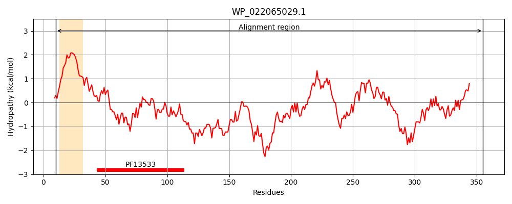
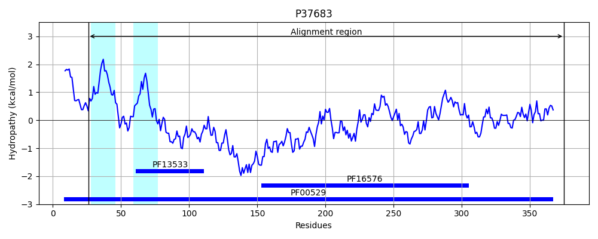
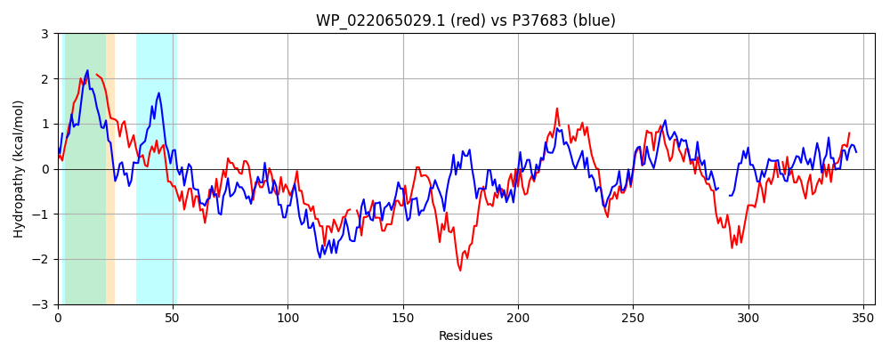

Hit Accession: P37683
Hit TCID: 8.A.1.1.4
Hit Description: gnl|BL_ORD_ID|10133 gnl|TC-DB|P37683|8.A.1.1.4 Inner membrane protein yiaV OS=Escherichia coli (strain K12) GN=yiaV PE=1 SV=1
Mach Len: 355
e:0.000000
Query TMS Count : 1
Hit TMS Count: 2
TMS-Overlap Score: 0.900000
Predicted Substrates:None
BLAST Alignment:
Score: 295 , Bit scores: 118 bits, E-value: 3.5e-30, Alignment length: 355, Percentage identity: 27
Query: 10 RWVRVSIAAFLGIF---AWFIVADIWIPLTPDSTVMRVVTPVSSRVSGYVSHVYVHNNSQVKKGDLLYELDPTPFINKVEAAEIALEQAKLSNQQLDAQIAAARANLRTAQYTARNDKVTLDRYQRLS--TMQNVSQSDLDKVRTTWQTSEQSVSALNAQIQNLLIQRGERDDKRNVTLQKYRNALEEAQLNLAWTQVRAETDGMVSNLQLNPGIYATA---ATAVLALVNNNTDIVADFREKSLRHTAVNTDAAVVFDALPGQVFPAHVTSSDAGILAGQEAVNGQLSQPEQSTRWVRDAQRMRIHVALDQPL-AKPLPTGARATVQLYNSEGPFARTFAGLQIHLVSWLHYVY 355
+W + AA GIF ++ + P T + + PV +V+G V V N+ +KKG++L+ LDPT + +V+ + A+ + L A++ AN + A+ T RY R S + S+ D+D R + E SV + A+ + + Q + + + L EA+ NL T VRA +DG V+ + + PG YA + ++ + + IVA FR+ SL A DA VVF+ALPG+VF + + + G G L Q+ + + + LD+ LP G A V +Y+ + + + SW+HY+Y
Sbjct: 26 KWT-IPTAALGGIFIVSGLILLMNYNHPYTFKAQKAVISIPVVPQVTGVVIEVTDKKNTLIKKGEVLFRLDPTRYQARVDRLMADIVTAEHKQRALGAELDEMAANTQQAKATRDKFAKEYQRYARGSQAKVNPFSERDIDVARQNYLAQEASVKSSAAEQKQIQSQLDSLVLGEHSQIASLKAQLAEAKYNLEQTIVRAPSDGYVTQVLIRPGTYAASLPLRPVMVFIPDQKRQIVAQFRQNSLLRLAPGDDAEVVFNALPGKVFSGKLAAISPAVPGGAYQSTGTL----QTLNTAPGSDGVIATIELDEHTDLSALPDGIYAQVAVYSDHFSHVSVMRKVLLRMTSWVHYLY 375 | Protein Hydropathy Plots: |
|---|
|  |  |
Pairwise Alignment-Hydropathy Plot:
|
|---|
|  |